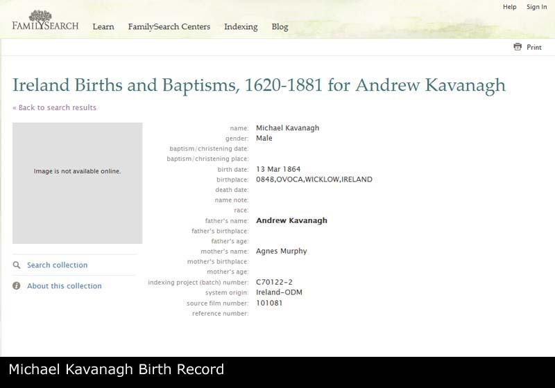
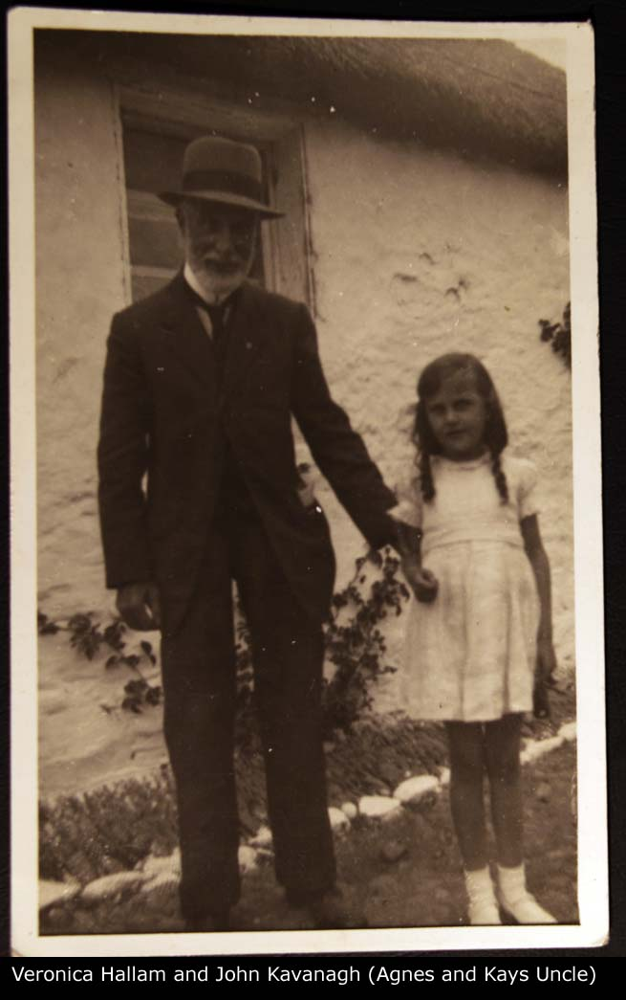
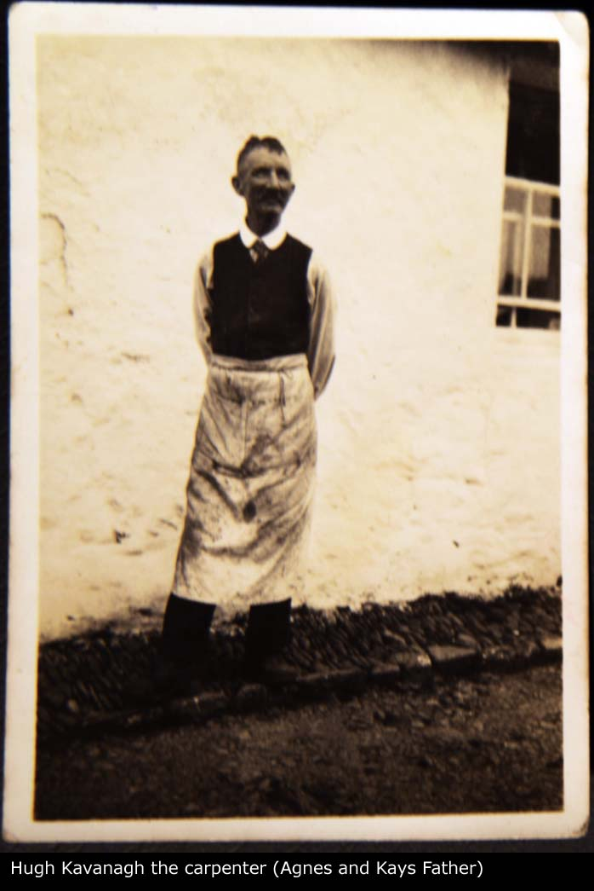

Family Record: Andrew KAVANAGH x Agnes MURPHY
Family Record: Andrew KAVANAGH x Agnes MURPHY - Overview
| Husband | Andrew KAVANAGH | |
| Wife | Agnes MURPHY | |
| Child #1 | Michael KAVANAGH b. 13/03/1864 | |
| Child #2 | John KAVANAGH b. 25/07/1868 | |
| Child #3 | Hugh Joseph KAVANAGH b. 22/03/1871 | |
| Child #4 | Kate KAVANAGH b. 18/02/1874 | |
| Change Date | Date | 01/05/2011 |
| Time | 13:19 | |
Andrew KAVANAGH was the son of Unknown KAVANAGH and Unknown UNKNOWN. Andrew had a family with Agnes. 3 sons and one daughter given. |
Children
| i | Michael KAVANAGH was born on 13/03/1864 in Ovoca, Wicklow, Ireland. |  | ||
| ii | John KAVANAGH1 was born on 25/07/1868 in Wicklow, Ireland. |  | ||
| iii | Hugh Joseph KAVANAGH was born on 22/03/1871 in Dunganstown, Wicklow, Ireland. |  | ||
| iv | Kate KAVANAGH was born on 18/02/1874 in Dunganstown, Wicklow, Ireland. |  |
Notes
1. John never married; [Note Record]
Web page generated using a registered copy of GedScape software, licensed by Mark Watkin
Web page generated using a registered copy of GedScape software (www.gedscape.co.uk), licensed to Mark Watkin